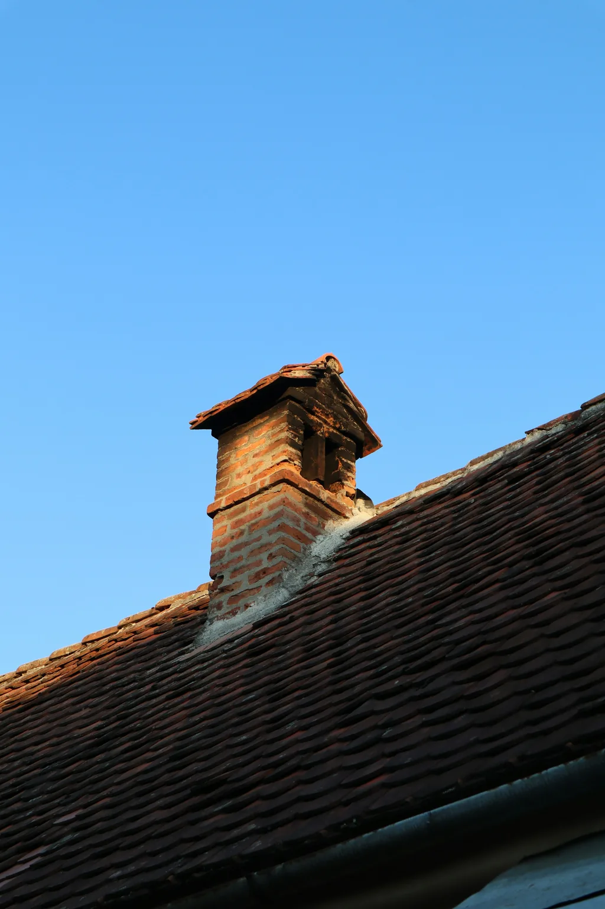
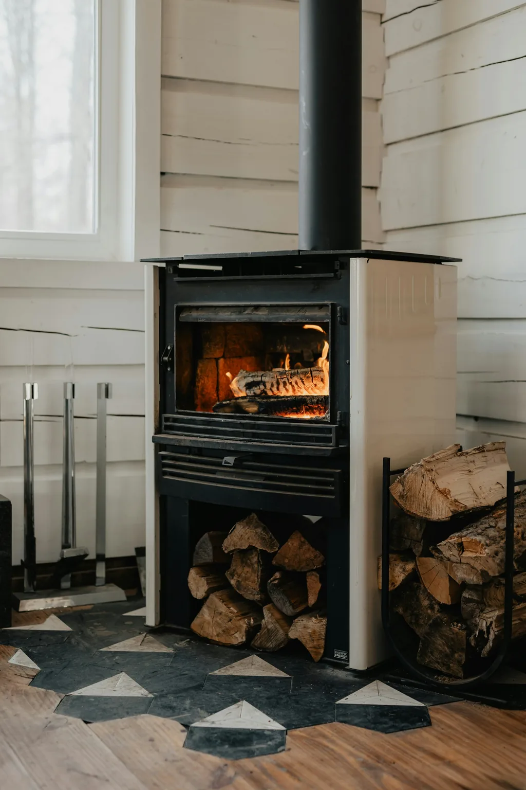
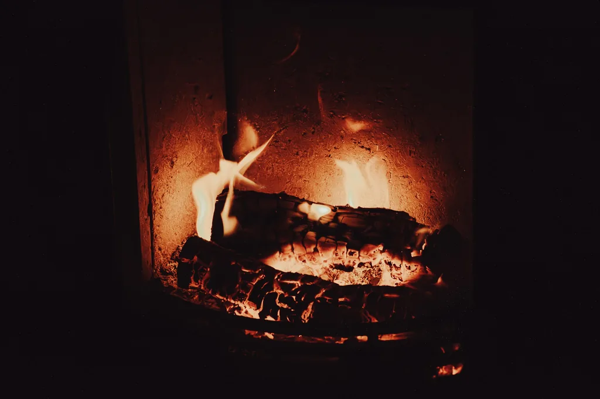

Ramonage des inserts et des poêles
Je ramone les conduits des inserts et des poêles à bois ou à granulés. L’intervention peut se limiter au conduit ou inclure l’entretien de votre appareil.


Le ramonage chez vous
Le conduit est ramoné mécaniquement par le haut, et son état fait l’objet d’un contrôle visuel. Je nettoie ensuite la zone d’intervention et vous remets un certificat ou une attestation.

Ramonage seul ou avec entretien
Le tarif est établi en fonction de l’appareil, bois ou granulés, des conditions d’accès et de l’entretien souhaité. Précisez ces éléments lorsque nous convenons du rendez-vous.
Durée et règlement
L’intervention dure en moyenne 30 minutes. Une tarification est également prévue pour les maisons qui comptent plusieurs conduits. Vous pouvez régler en espèces, par chèque ou par virement.

Fixer le rendez-vous
Appelez-moi ou envoyez-moi un SMS : nous convenons ensemble d’une date pour confirmer le rendez-vous.
Questions fréquentes
Quels appareils pouvez-vous ramoner ?
Je ramone les inserts et les poêles à bois ou à granulés. Vous pouvez associer au ramonage l’entretien de l’appareil.
Que comprend le ramonage ?
Je ramone le conduit mécaniquement par le haut et j’en contrôle visuellement l’état. La zone est ensuite nettoyée, et je vous remets un certificat ou une attestation.
Combien de temps prévoir pour le ramonage ?
Prévoyez en moyenne 30 minutes pour l’intervention.
Comment régler le ramonage ?
Vous pouvez régler en espèces, par chèque ou par virement.
Commençons par un échange
Indiquez-moi votre commune et le type d’appareil à ramoner pour préparer le rendez-vous.